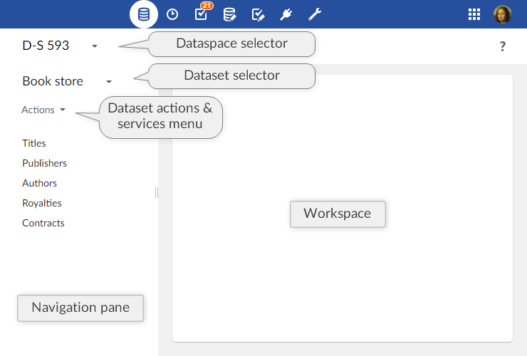

Introduction to datasets
Overview
What is a dataset?
A dataset is a container for data that is based on the structural definition provided by its underlying data model. When a data model has been published, it is possible to create datasets based on its definition. If that data model is later modified and republished, all its associated datasets are automatically updated to match.
In a dataset, you can consult actual data values and work with them. The views applied to tables allow representing data in a way that is most suitable to the nature of the data and how it needs to be accessed. Searches and filters can also be used to narrow down and find data.
Different permissions can also be accorded to different roles to control access at the dataset level. Thus, using customized permissions, it would be possible to allow certain users to view and modify a piece of data, while hiding it from others.
Basic concepts related to datasets
A basic understanding of the following terms is beneficial when working with datasets:
Using the Data user interface
Datasets can be created, accessed and modified in the Data area using the Advanced perspective or from a specifically configured perspective. Only authorized users can access these interfaces.

Select or create a dataset using the 'Select dataset' menu in the navigation pane. The data structure of the dataset is then displayed in the navigation pane, while record forms and table views are displayed in the workspace.
When viewing a table of the dataset in the workspace, the button  displays searches and filters that can be applied to narrow down the records that are displayed.
displays searches and filters that can be applied to narrow down the records that are displayed.
Operations at the dataset level are located in the Actions menu in the navigation pane (services are available at the bottom of the list).
Related concepts
User guide table of contents